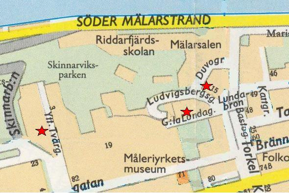
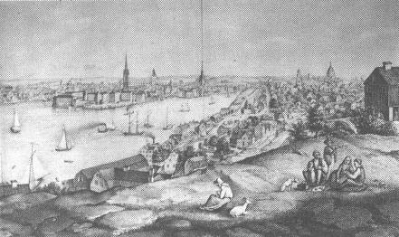
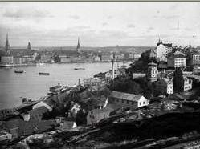
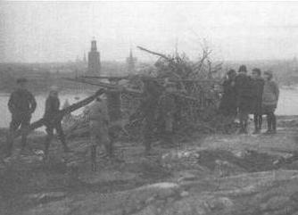
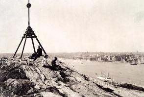

|
Skinnarviksberget
Nutidsbilder

Äldre kartor
Panorama av Heinrich Neuhaus, 1870
Gatunamnens historia
Ur Kulturhus på Söder och Djurgården, Arne Eriksson, 1999
|

Utsikt från Titzens fåfänga mot Riddarholmen, Gamla stan och Mariaberget. Lusthuset syns till höger. Litografi av A J Salmson, ca 1848.
Ett berg med en sådan utsikt som Skinnarviksberget måste
naturligtvis attrahera en fåfängebyggare. Så blev också fallet. Vid Yttersta Tvärgränd, på bergets västsida,
bodde
polisövergevaldigern Jakob Martin Titz i eget hus i nr 6. Han ägde flera gårdar i Skinnarvikskvartéren. På berget tvärs över gränden
byggde han 1824 sin fåfänga. Det var
ett timrat lusthus som han låtit måla i imiterad tegelmurning - ett litet tempel för
svärmisk naturdyrkan. Titz avled 1833 men »Titzens fåfänga« levde länge kvar som benämning
på det nuvarande huset.


Kåkbebyggelserna och naturområdena kring berget var under 1800-talet och början av 1900-talet ett fattigt slumområde likt andra
utkanter i Stockholm. I de bristfälliga husen bodde änkor i små omständigheter, enklare hantverkare och arbetare vid de
närbelägna industrierna.
Under sommartid kunde dock berget vara en leende idyll. Kakelugnsmakare, båtsmän och arbetskarlar drog hit om söndagarna,
medförande familj, matsäckar, instrument och dryckjom allt efter råd och lägenhet. Här fann de inbjudande grässlänter mellan bergknallarna, inramade av vildrossnår och lysande av styvmorsviol. Och sist men inte minst - en hänförande
Stockholmsutsikt i bakgrunden.
|
|
Skinnarviksberget är Stockholms högst belägna naturliga utsiktspunkt. Panoramat är vidsträckt. Stora delar av staden kan
betraktas och beundras vid vackert väder.
Skinnarviken har fått sitt namn efter skinnarna eller garvarna. De tillhörde de grupper av hantverkare som tidigt flyttade ut till
malmarna. Skinnarnas arbete krävde god tillgång på vatten. De slog sig därför ner vid stränderna bl. a. vid Skinnarviken - en del av
Riddarfjärden. Bergsområdet kallades först Skinnarberget men från slutet av 1600-talet blir Skinnarviksberget den vanliga
namnformen.

Pojkar bygger majbrasa på Skinnarviksberget 1925

|
Om man följer Ludvigsbergsgatan mot Duvogränd ligger till höger tre bevarade äldre hus. Det första, nr 10, är en typisk
representant för en försvunnen grupp småborgarhus av sten från 1700-talet. De två andra är fina exempel på vackra
1700-talshus i trä.
Vid Duvogränd ligger den imponerande disponentvillan med sitt karaktäristiska åttkantiga torn. Villan var under 1800-talet
bostad för ägaren till Ludvigsbergs gjuteri och mekaniska verkstad.
Längs Ludvigsbergsgatan upp mot den moderna bebyggelsen vid Gamla Lundagatan har på den norra sidan en
sammanhållen länga 1700-talshus bevarats . Husen på den södra sidan av gatan revs för att bereda plats för de nya
husen, som uppfördes i början av 1960-talet. Om man följer backen utefter husraden och svänger upp mot
Skinnarviksbergets hjässa, kan man beundra Stockholm från stadens högsta naturliga utsiktpunkt.
På Yttersta Tvärgränd nedanför bergets västsida möter bilden av en bevarad stadsgata från äldre tider med delvis
kullerstensbelagd gatumark och tidstypiska hus. Yttersta Tvärgränd nås också lätt från korsningen Ringvägen-Hornsgatan
|
|
{kind=link}